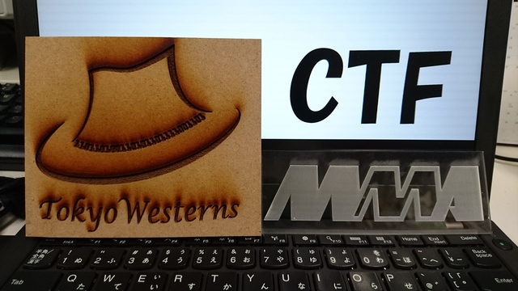

Tokyo Westerns/MMA CTF 2nd 2016
コンテストは終了しました．参加いただき，ありがとうございました．
最終結果
| 順位 |
チーム名 |
得点 |
| 1 | PPP | 6840 |
| 2 | 217 | 6290 |
| 3 | LC/BC | 5190 |
| 4 | Public Security Section 9 | 4790 |
| 5 | Bushwhackers | 4790 |
| 6 | p4 | 4360 |
| 7 | Shellphish | 4120 |
| 8 | scryptos | 3990 |
| 9 | PwnThyBytes | 3960 |
| 10 | blue-lotus | 3770 |
全チームのランキングはランキングのページから確認できます．
問題セット
問題一覧
各問題はGitHub上にあります．
概略
Tokyo Westerns/MMA CTFは，CTFチームTokyo Westerns及び電気通信大学のサークルMMA，東京農工大学のサークルMCCの学生が主催するセキュリティコンテストです．昨年開催されたMMA CTFのメンバーにTokyo Westernsのメンバーが加わって開催されることになりました．48時間のうちに出来るだけ多くのフラグを獲得し，得点をチーム毎に競います．
情報
- 形式
- Jeopardy形式・チーム戦
- 開催日時
- 2016/09/03 09:00 - 2016/09/05 09:00 (JST)
- 出題されるジャンル
- Crypto, Pwnable, Programming, Reversing, Forensics, Web, ...
- 言語
- 問題文，お知らせは日本語と英語の両方で提供されます．
チーム登録
スコアサーバからチーム登録ができます．
ルール
- チーム戦です．
- チームに人数制限はありません。もちろん一人のチームでも参加できます．
- 指定のない限り,フラグの形式は"
TWCTF{something}"です。
- フラグをスコアサーバーに提出することで得点が得られます。
- 一つの問題には複数のフラグが含まれることがあります。
- より高得点のチームが、高い順位となります。他のチームと同じ点数の場合には、最後にフラグを送信した時刻が早いチームがより高い順位となります。
- コンテスト中に何か質問がある場合，IRCにてご連絡ください．(詳細は"IRC情報"を参照してください)
禁止事項
- 他のチームを攻撃・妨害してはなりません。
*.chal.ctf.westerns.tokyo.以外のサーバを攻撃してはなりません。- 他のチームと答えやヒントを共有してはなりません。
- サーバへの優しさを忘れずに。過剰なアクセスはBanされるかもしれません。
IRC情報
- サーバー名
- chat.freenode.net (freenode)
- チャンネル
- #twctf-2016(英語), #twctf-2016-ja(日本語, UTF-8)
コンタクト
Email tokyowesterns@gmail.com
過去のコンテスト
スタッフ
ytoku
- Cryptography
- pwnableなプログラムのスーパーサーバ，pwnabledの開発
- MMA CTF 1st 2015 運営
nomeaning
hiro1357 (@eserver_dip_jp)
- Support, etc
- MMA CTF 1st 2015 運営
- I want to sleep at night.
whywaita
h-otter
icchy (@icchyr)
- Web, Forensics
- Deployment prayer
hhc0null
ShiftCrops (@shift_crops)
N4NU(@_N4NU_)

Special Thanks
コンテストの開催にあたり、支援を頂いた株式会社サイバーディフェンス研究所様に心より感謝申し上げます。
株式会社サイバーディフェンス研究所様
運営のための会場を提供していただきました。